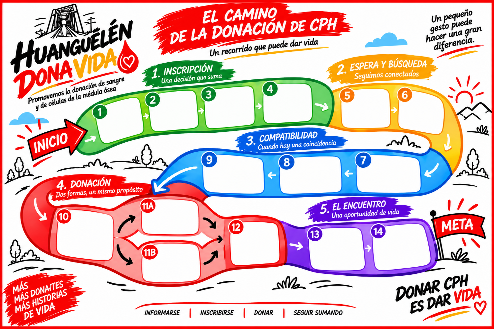

🩸 ¿Por qué donar?
La sangre donada se utiliza en distintas situaciones de atención de la salud, como cirugías y tratamientos.
Conocer la donación de sangre y de células progenitoras hematopoyéticas ayuda a compartir información y construir una comunidad más solidaria.
Conocer más Ir al tableroLa sangre no se puede fabricar. La donación voluntaria y habitual ayuda a que esté disponible cuando alguien la necesita.
La sangre donada se utiliza en distintas situaciones de atención de la salud, como cirugías y tratamientos.
Donar voluntariamente contribuye a mantener el suministro de sangre para los servicios de salud.
Los requisitos se evalúan en el lugar de donación por personal de salud capacitado.
Las células progenitoras hematopoyéticas son células capaces de dar origen a los distintos componentes de la sangre.
Principalmente en la médula ósea y también en la sangre periférica. La sangre del cordón umbilical es otra fuente.
Permite buscar personas compatibles con pacientes que necesitan un trasplante de CPH.
Es una coincidencia que se determina mediante estudios específicos.
Arrastrá las fichas hasta el tablero. También podés tocar una ficha y después tocar el tablero.

No se encontró assets/tablero.png. Colocá tu imagen en la carpeta assets.
Soltá aquí las fichas
No. Son procesos diferentes y tienen objetivos y evaluaciones propias.
La aptitud se determina mediante los requisitos y controles que realiza el equipo de salud.
No. La donación se concreta si se encuentra una persona compatible y se cumplen las evaluaciones necesarias.
Información oficial de salud.
Visitar sitio oficial ↗Información sobre donación y trasplante.
Visitar INCUCAI ↗Ayudá a que más personas conozcan la importancia de donar.
Volver al inicio ↑